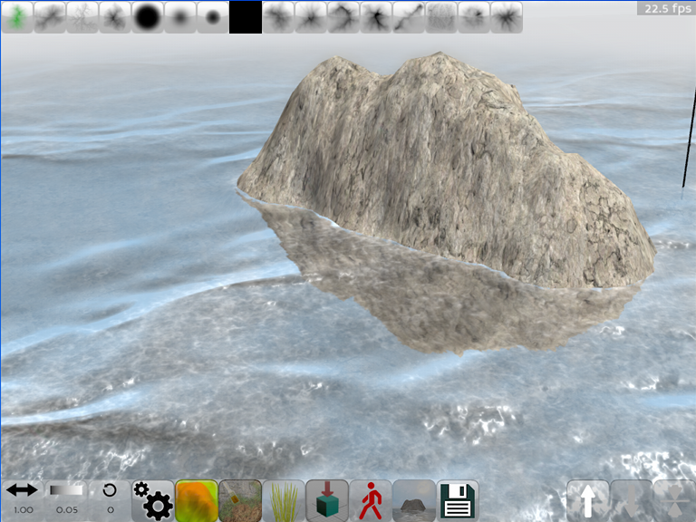
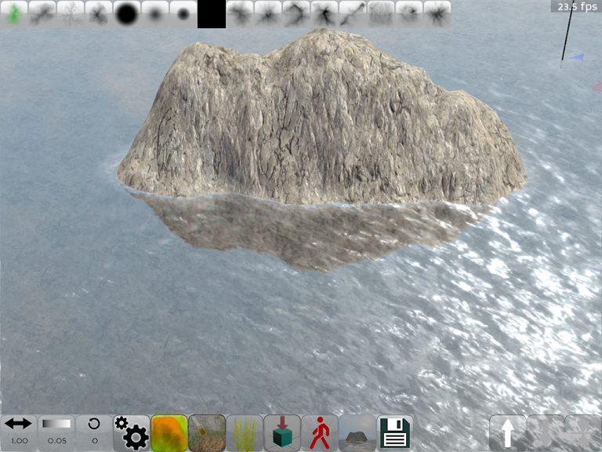
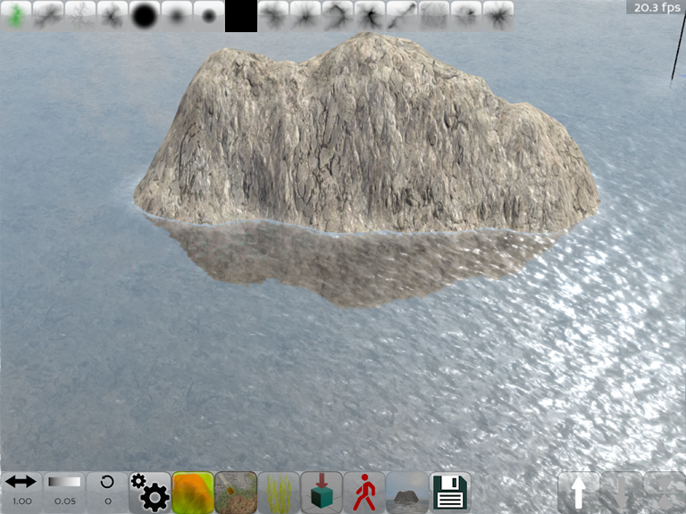
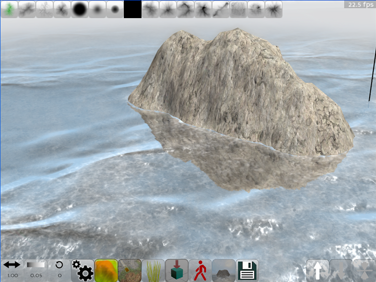
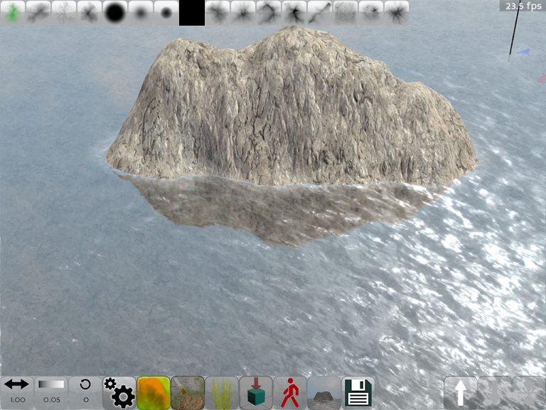
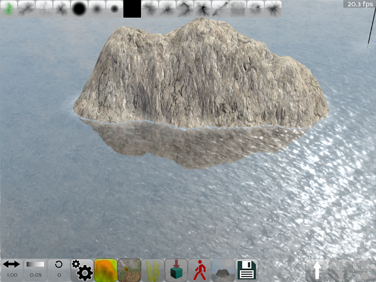

Water, Sky and terrain config icon
The editor allows to configure a water plane and a sky dome, these are part of the map configuration because all the water and sky settings are saved with the map file.
Water, Sky and terrain config dialog
Sky settings
Sky tile
This is the number of times the cloud texture is repeated over the sky dome. A big number will make the clouds small and detailed but the repeating pattern of the texture can become obvious, a small number will create large, blurred clouds.
Cloud speed
This is the distance the clouds move per frame in the texture space. The apparent speed at which the clouds move varies depending on the Sky tile value, but bigger numbers will always make the clouds move faster.
Sky tiling settings
Water settings
Wave tile
Water waves are repeated this many times. This refers to the kind of waves one can see on an open sea. The waves are not only a shading effect but they deform the surface of the water plane. The waves also produce foam
Wave height
Scaling factor for the waves.
Wave XY Move
This is the relative speed at which the waves move across the surface in the X and Y direction.
Water Tile
Apart from large waves the water shader also uses a normal map (dx/dy map to be precise) for smaller details (ripples), this is the number of times this texture is repeated over the water surface. This will not effect the distortion effect – that is a screen space effect and it’s size changes with the view.
Water speed
A speed factor for the water ripples.
Water level
The level at which the water plane is drawn. A value of -1 disables rendering water and updating the water reflection buffer.
 




